Rajamanoharan et al. — 2024 · Senthooran Rajamanoharan, Tom Lieberum, Nicolas Sonnerat, Arthur Conmy, Vikrant Varma, János Kramár, Neel Nanda
| Priority | ○ P1 — Important · optional |
| Section | C — Superposition and sparse autoencoders |
| Source | https://arxiv.org/abs/2407.14435v3 (arXiv:2407.14435v3) |
| Licence | CC BY 4.0 |
| Print anthology | pages 845–871 (cover 845, text 846–871) |
Why read this. Introduces JumpReLU SAEs trained directly on an L0 penalty with straight-through estimators, improving reconstruction fidelity at fixed sparsity.
Reading focus. The JumpReLU activation and thresholds, pseudo-derivatives via straight-through estimation, and comparisons with Gated and TopK SAEs on Gemma 2 9B.
In context. Competes with 19 on the reconstruction–sparsity frontier. 21 and 25 ask whether gains on that frontier produce more faithful features, and 27 asks whether they produce the same features twice.
Optional. An architectural refinement on the frontier of 19; worth printing if you train sparse autoencoders yourself.
← 19 Scaling and Evaluating Sparse Autoencoders · Contents · 21 A is for Absorption →
Text extracted automatically from the source PDF. Display equations, figures and some tables appear as images; inline mathematics may be garbled — the PDF is authoritative.
Senthooran Rajamanoharan* , Tom Lieberum† , Nicolas Sonnerat, Arthur Conmy, Vikrant Varma, János Kramár and Neel Nanda
*: Core contributor. †: Core infrastructure contributor.
Sparse autoencoders (SAEs) are a promising unsupervised approach for identifying causally relevant and interpretable linear features in a language model’s (LM) activations. To be useful for downstream tasks, SAEs need to decompose LM activations faithfully; yet to be interpretable the decomposition must be sparse – two objectives that are in tension. In this paper, we introduce JumpReLU SAEs, which achieve state-of-the-art reconstruction fidelity at a given sparsity level on Gemma 2 9B activations, compared to other recent advances such as Gated and TopK SAEs. We also show that this improvement does not come at the cost of interpretability through manual and automated interpretability studies. JumpReLU SAEs are a simple modification of vanilla (ReLU) SAEs – where we replace the ReLU with a discontinuous JumpReLU activation function – and are similarly efficient to train and run. By utilising straight-through-estimators (STEs) in a principled manner, we show how it is possible to train JumpReLU SAEs effectively despite the discontinuous JumpReLU function introduced in the SAE’s forward pass. Similarly, we use STEs to directly train L0 to be sparse, instead of training on proxies such as L1, avoiding problems like shrinkage.
Sparse autoencoders (SAEs) allow us to find causally relevant and seemingly interpretable directions in the activation space of a language model (Bricken et al., 2023; Cunningham et al., 2023; Templeton et al., 2024). There is interest within the field of mechanistic interpretability in using sparse decompositions produced by SAEs for tasks such as circuit analysis (Marks et al., 2024) and model steering (Conmy and Nanda, 2024).
SAEs work by finding approximate, sparse, linear decompositions of language model (LM) activations in terms of a large dictionary of basic “feature” directions. Two key objectives for a good decomposition (Bricken et al., 2023) are that it is sparse – i.e. that only a few elements of the dictionary are needed to reconstruct any given activation – and that it is faithful – i.e. the approximation error between the original activation and recombining its SAE decomposition is “small” in some suitable sense. These two objectives are naturally in tension: for any given SAE training method and fixed dictionary size, it is typically not possible to increase sparsity without losing
One strand of recent research in training SAEs on LM activations (Gao et al., 2024; Rajamanoharan et al., 2024; Taggart, 2024) has been on finding improved SAE architectures and training methods that push out the Pareto frontier balancing these two objectives, while preserving other less quantifiable measures of SAE quality such as the interpretability or functional relevance of dictionary directions. A common thread connecting these recent improvements is the introduction of a thresholding or gating operation to determine which SAE features to use in the decomposition.
In this paper, we introduce JumpReLU SAEs – a small modification of the original, ReLU-based SAE architecture (Ng, 2011) where the SAE encoder’s ReLU activation function is replaced by a JumpReLU activation function (Erichson et al., 2019), which zeroes out pre-activations below a positive threshold (see Fig. 1). Moreover, we train JumpReLU SAEs using a loss function that is simply the weighted sum of a L2 reconstruction error term and a L0 sparsity penalty, eschewing easierto-train proxies to L0, such as L1, and avoiding the need for auxiliary tasks to train the threshold.
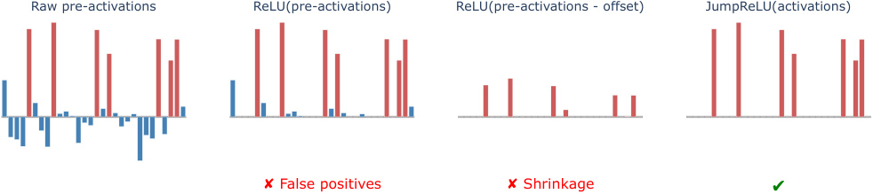
Raw pre-activations ReLU(pre-activations) ReLU(pre-activations - offset) JumpReLU(activations)
✘ False positives ✘ Shrinkage ✔
Figure 1 | A toy model illustrating why JumpReLU (or similar activation functions, such as TopK) are an improvement over ReLU for training sparse yet faithful SAEs. Consider a direction in which the encoder pre-activation is high when the corresponding feature is active and low, but not always negative, when the feature is inactive (far-left). Applying a ReLU activation function fails to remove all false positives (centre-left), harming sparsity. It is possible to get rid of false positives while maintaining the ReLU, e.g. by decreasing the encoder bias (centre-right), but this leads to feature magnitudes being systematically underestimated, harming fidelity. The JumpReLU activation function (far-right) provides an independent threshold below which pre-activations are screened out, minimising false positives, while leaving pre-activations above the threshold unaffected, improving fidelity.
Our key insight is to notice that although such a loss function is piecewise-constant with respect to the threshold – and therefore provides zero gradient to train this parameter – the derivative of the expected loss can be analytically derived, and is generally non-zero, albeit it is expressed in terms of probability densities of the feature activation distribution that need to be estimated. We show how to use straight-through-estimators (STEs; Bengio et al. (2013)) to estimate the gradient of the expected loss in an efficient manner, thus allowing JumpReLU SAEs to be trained using standard gradient-based methods.
We evaluate JumpReLU, Gated and TopK (Gao et al., 2024) SAEs on Gemma 2 9B (Gemma Team, 2024) residual stream, MLP output and attention output activations at several layers (Fig. 2). At any given level of sparsity, we find JumpReLU SAEs consistently provide more faithful reconstructions than Gated SAEs. JumpReLU SAEs also provide reconstructions that are at least as good as, and often slightly better than, TopK SAEs. Similar to simple ReLU SAEs, JumpReLU SAEs only require a single forward and backward pass during a training step and have an elementwise activation function (unlike TopK, which requires a partial sort), making them more efficient to train than either Gated or TopK SAEs.
Compared to Gated SAEs, we find both TopK
and JumpReLU tend to have more features that activate very frequently – i.e. on more than 10% of tokens (Fig. 5). Consistent with prior work evaluating TopK SAEs (Cunningham and Conerly, 2024) we find these high frequency JumpReLU features tend to be less interpretable, although interpretability does improve as SAE sparsity increases. Furthermore, only a small proportion of SAE features have very high frequencies: fewer than 0.06% in a 131k-width SAE. We also present the results of manual and automated interpretability studies indicating that randomly chosen JumpReLU, TopK and Gated SAE features are similarly interpretable.
SAE architectures SAEs sparsely decompose language model activations x ∈ ℝ𝑛 as a linear combination of a dictionary of 𝑀 ≫ 𝑛 learned feature directions and then reconstruct the original activations using a pair of encoder and decoder functions ( f , ˆ x ) defined by:
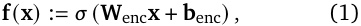
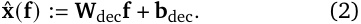
In these expressions, f ( x ) ∈ ℝ𝑀 is a sparse, nonnegative vector of feature magnitudes present in the input activation x , whereas x ˆ( f ) ∈ ℝ𝑛 is a reconstruction of the original activation from
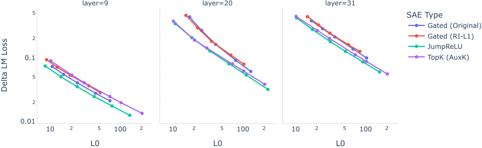
layer=9 layer=20 layer=31
5 SAE Type
Gated (Original)
2 Gated (RI-L1)
JumpReLU
0.1 TopK (AuxK)
5
2
0.01
10 2 5 100 2 10 2 5 100 2 10 2 5 100 2
L0 L0 L0
Delta LM Loss
Figure 2 | JumpReLU SAEs offer reconstruction fidelity that equals or exceeds Gated and TopK SAEs at a fixed level of sparsity. These results are for SAEs trained on the residual stream after layers 9, 20 and 31 of Gemma 2 9B. See Fig. 10 and Fig. 11 for analogous plots for SAEs trained on MLP and attention output activations at these layers.
a feature representation f ∈ ℝ𝑀 . The columns of W dec, which we denote by d 𝑖 for 𝑖 = 1 . . . 𝑀 , represent the dictionary of directions into which the SAE decomposes x . We also use 𝝅 ( x ) in this text to denote the encoder’s pre-activations:
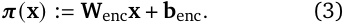
Activation functions The activation function 𝜎 varies between architectures: Bricken et al. (2023) and Templeton et al. (2024) use the ReLU activation function, whereas TopK SAEs (Gao et al., 2024) use a TopK activation function (which zeroes out all but the top 𝐾 preactivations). Gated SAEs (Rajamanoharan et al., 2024) in their general form do not fit the specification of Eq. (1); however with weight sharing between the two encoder kernels, they can be shown (Rajamanoharan et al., 2024, Appendix E) to be equivalent to using a JumpReLU activation function, defined as
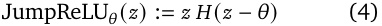
where 𝐻 is the Heaviside step function1 when 𝜃> 0 is the JumpReLU’s threshold, below which pre-activations are set to zero, as shown in Fig. 3.
1 𝐻 ( 𝑧 ) is one when 𝑧> 0 and zero when 𝑧< 0. Its value when 𝑧 = 0 is a matter of convention – unimportant when 𝐻 appears within integrals or integral estimators, as is the case in this paper.
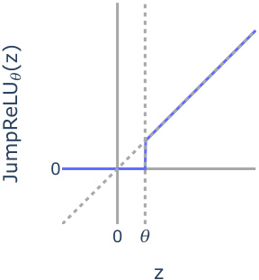
0
0 𝜃
z
(z)JumpReLU 𝜃
Figure 3 | The JumpReLU activation function zeroes inputs below the threshold, 𝜃 , and is an identity function for inputs above the threshold.
Loss functions Language model SAEs are trained to reconstruct samples from a large dataset of language model activations x ∼D typically using a loss function of the form
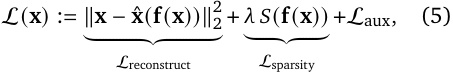
where 𝑆 is a function of the feature coefficients that penalises non-sparse decompositions and the sparsity coefficient 𝜆 sets the trade-off between sparsity and reconstruction fidelity. Optionally, auxiliary terms in the loss function, Laux may be included for a variety of reasons, e.g. to help train parameters that would otherwise not receive suitable gradients (used for Gated SAEs) or to resurrect unproductive (“dead”) feature direc-
tions (used for TopK). Note that TopK SAEs are trained without a sparsity penalty, since the TopK activation function directly enforces sparsity.
Sparsity penalties Both the ReLU SAEs of Bricken et al. (2023) and Gated SAEs use the L1-norm 𝑆 ( f ) := ∥ f ∥1 as a sparsity penalty. While this has the advantage of providing a useful gradient for training (unlike the L0-norm), it has the disadvantage of penalising feature magnitudes in addition to sparsity, which harms reconstruction fidelity (Rajamanoharan et al., 2024; Wright and Sharkey, 2024).
The L1 penalty also fails to be invariant under reparameterizations of a SAE; by scaling down encoder parameters and scaling up decoder parameters accordingly, it is possible to arbitrarily shrink feature magnitudes, and thus the L1 penalty, without changing either the number of active features or the SAE’s output reconstructions. As a result, it is necessary to impose a further constraint on SAE parameters during training to enforce sparsity: typically this is achieved by constraining columns of the decoder weight matrix d 𝑖 to have unit norm (Bricken et al., 2023). Conerly et al. (2024) introduce a modification of the L1 penalty, where feature coefficients are weighted by the norms of the corresponding dictionary directions, i.e.
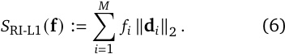
We call this the reparameterisation-invariant L1 (RI-L1) sparsity penalty, since this penalty is invariant to SAE reparameterisation, making it unnecessary to impose constraints on ∥ d 𝑖 ∥2.
Kernel density estimation Kernel density estimation (KDE; Parzen (1962); Wasserman (2010)) is a technique for empirically estimating probability densities from a finite sample of observations. Given 𝑁 samples 𝑥 1 ...𝑁 of a random variable 𝑋 , one can form a kernel density estimate of the probability density 𝑝𝑋 ( 𝑥 ) using an estimator of the form ˆ 𝑝𝑋 ( 𝑥 ) := 𝑁𝜀 1 � 𝛼𝑁 =1𝐾�𝑥− 𝜀𝑥𝛼 �, where 𝐾 is a non-negative function that satisfies the properties of a centred, positive-variance probability density function and 𝜀 is the kernel
bandwidth parameter.2 In this paper we will be actually be interested in estimating quantities like 𝑣 ( 𝑦 ) = 𝔼[ 𝑓 ( 𝑋, 𝑌 )| 𝑌 = 𝑦 ] 𝑝𝑌 ( 𝑦 ) for jointly distributed random variables 𝑋 and 𝑌 and arbitrary (but well-behaved) functions 𝑓 . Following a similar derivation as in Wasserman (2010, Chapter 20), it is straightforward to generalise KDE to estimate 𝑣 ( 𝑦 ) using the estimator
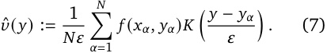
A JumpReLU SAE is a SAE of the standard form Eq. (1) with a JumpReLU activation function:
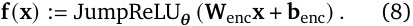
Compared to a ReLU SAE, it has an extra positive vector-valued parameter 𝜽 ∈ ℝ+_𝑀_thatspecifies, for each feature 𝑖 , the threshold that encoder preactivations need to exceed in order for the feature to be deemed active.
Similar to the gating mechanism in Gated SAEs and the TopK activation function in TopK SAEs, the threshold 𝜽 gives JumpReLU SAEs the means to separate out deciding which features are active from estimating active features’ magnitudes, as illustrated in Fig. 1.
We train JumpReLU SAEs using the loss function
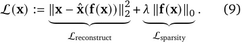
This is a loss function of the standard form Eq. (5) where crucially we are using a L0 sparsity penalty to avoid the limitations of training with a L1 sparsity penalty (Rajamanoharan et al., 2024; Wright and Sharkey, 2024). Note that we can also express the L0 sparsity penalty in terms of a Heaviside step function on the encoder’s pre-activations 𝝅 ( x ):
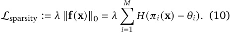
2I.e. 𝐾 ( 𝑥 ) ≥ 0, ∫−∞∞𝐾(𝑥)d𝑥=1, ∫−∞∞𝑥𝐾(𝑥)d𝑥=0and ∫−∞∞_𝑥_2𝐾(𝑥)d_𝑥>_0.
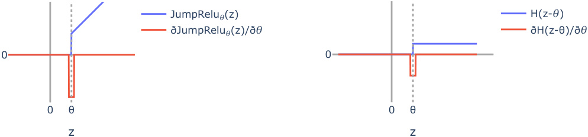
JumpRelu 𝜃 (z) H(z- 𝜃 )
ðJumpRelu 𝜃 (z)/ð 𝜃 ðH(z-θ)/ð 𝜃
0 0
0 θ 0 θ
z z
Figure 4 | The JumpReLU activation function (left) and the Heaviside step function (right) used to calculate the sparsity penalty are piecewise constant with respect to the JumpReLU threshold. Therefore, in order to be able to train a JumpReLU SAE, we define the pseudo-derivatives illustrated in these plots and defined in Eq. (11) and Eq. (12), which approximate the Dirac delta functions present in the actual (weak) derivatives of the JumpReLU and Heaviside functions. These pseudo-derivatives provide a gradient signal to the threshold whenever pre-activations are within a small window of width 𝜀 around the threshold. Note these plots show the profile of these pseudo-derivatives in the 𝑧 , not 𝜃 direction, as 𝑧 is the stochastic input that is averaged over when computing the mean gradient.
The relevance of this will become apparent shortly.
The difficulty with training using this loss function is that it provides no gradient signal for training the threshold: 𝜽 appears only within the arguments of Heaviside step functions in both Lreconstruct and Lsparsity.3 Our solution is to use straight-through-estimators (STEs; Bengio et al. (2013)), as illustrated in Fig. 4. Specifically, we define the following pseudo-derivative for JumpReLU 𝜃 ( 𝑧 ):4
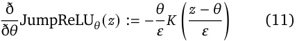
and the following pseudo-derivative for the Heaviside step function appearing in the L0 penalty:
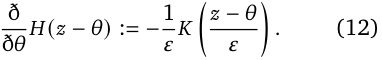
In these expressions, 𝐾 can be any valid kernel function (see Section 2) – i.e. it needs to satisfy
3The L0 sparsity penalty also provides no gradient signal for the remaining SAE parameters, but this is not necessarily a problem. It just means that the remaining SAE parameters are encouraged purely to reconstruct input activations faithfully, not worrying about sparsity, while sparsity is taken care of by the threshold parameter 𝜽 . This is analogous to TopK SAEs, where similarly the main SAE parameters are trained solely to reconstruct faithfully, while sparsity is enforced by the TopK activation function.
4We use the notation ð/ð 𝑧 to denote pseudo-derivatives, to avoid conflating them with actual partial derivatives for these functions.
the properties of a centered, finite-variance probability density function. In our experiments, we use the rectangle function, rect( 𝑧 ) := 𝐻 𝑧 +1 2 − � � 𝐻 𝑧 −1 2 as our kernel; however similar results � � can be obtained with other common kernels, such as the triangular, Gaussian or Epanechnikov kernel (see Appendix H). As we show in Section 4, the hyperparameter 𝜀 plays the role of a KDE bandwidth, and needs to be selected accordingly: too low and gradient estimates become too noisy, too high and estimates become too biased.5
Having defined these pseudo-derivatives, we train JumpReLU SAEs as we would any differentiable model, by computing the gradient of the loss function in Eq. (9) over batches of data (remembering to apply these pseudo-derivatives in the backward pass), and sending the batch-wise mean of these gradients to the optimiser in order to compute parameter updates.
In Appendix J we provide pseudocode for the JumpReLU SAE’s forward pass, loss function and for implementing the straight-through-estimators defined in Eq. (11) and Eq. (12) in an autograd framework like Jax (Bradbury et al., 2018) or
5For the experiments in this paper, we swept this parameter and found 𝜀 = 0 . 001 (assuming a dataset normalised such that 𝔼 x [ x2 ] = 1) works well across different models, layers and sites. However, we suspect there are more principled ways to determine this parameter, borrowing from the literature on KDE bandwidth selection.
PyTorch (Paszke et al., 2019).
Why does this work? The key is to notice that during SGD, we actually want to estimate the gradient of the expected loss, 𝔼 x [L 𝜽 ( x )], in order to calculate parameter updates;6 Although the loss itself is piecewise constant with respect to the threshold parameters – and therefore has zero gradient – the expected loss is not.
As shown in Appendix B, we can differentiate expected loss with respect to 𝜽 analytically to obtain
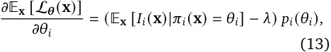
where 𝑝𝑖 is the probability density function for the distribution of feature pre-activations 𝜋𝑖 ( x ) and
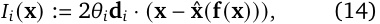
recalling that d 𝑖 is the column of W dec corresponding to feature 𝑖 .7
In order to train JumpReLU SAEs, we need to estimate the gradient as expressed in Eq. (13) from batches of input activations, x 1 , x 2 , . . . , x 𝑁 . To do this, we can use a generalised KDE estimator of the form Eq. (7). This gives us the following estimator of the expected loss’s gradient with respect to 𝜽 :
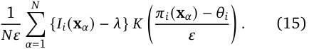
As we show in Appendix C, when we instruct autograd to use the pseudo-derivatives defined in
6In this section, we write the JumpReLU loss as L 𝜽 ( x ) to make explicit its dependence on the threshold parameter 𝜽 . 7Intuitively, the first term in Eq. (13) measures the rate at which the expected reconstruction loss would increase if we increase 𝜃𝑖 – thereby pushing a small number of features that are currently used for reconstruction below the updated threshold. Similarly, the second term is − 𝜆 multiplied by the rate at which the mean number of features used for reconstruction (i.e. mean L0) would decrease if we increase the threshold 𝜃𝑖 . The density 𝑝𝑖 ( 𝜃𝑖 ) comes into play because impact of a small change in 𝜃𝑖 on either the reconstruction loss or sparsity depends on how often feature activations occur very close to the current threshold.
Eqs. (11) and (12) in the backward pass, this is precisely the batch-wise mean gradient that gets calculated – and used by the optimiser to update 𝜽 – in the training loop.
In other words, training with straight-throughestimators as described in Section 3 is equivalent to estimating the true gradient of the expected loss, as given in Eq. (13), using the kernel density estimator defined in Eq. (15).
In this section, we compare JumpReLU SAEs to Gated and TopK SAEs across a range of evaluation metrics.8
To make these comparisons, we trained multiple 131k-width SAEs (with a range of sparsity levels) of each type (JumpReLU, Gated and TopK) on activations from Gemma 2 9B (base). Specifically, we trained SAEs on residual stream, attention output and MLP output sites after layers 9, 20 and 31 of the model (zero-indexed).
We trained Gated SAEs using two different loss functions. Firstly, we used the original Gated SAE loss in Rajamanoharan et al. (2024), which uses a L1 sparsity penalty and requires resampling (Bricken et al., 2023) – periodic re-initialisation of dead features – in order to train effectively. Secondly, we used a modified Gated SAE loss function that replaces the L1 sparsity penalty with the RIL1 sparsity penalty described in Section 2; see Appendix D for details. With this modified loss function, we no longer need to use resampling to avoid dead features.
We trained TopK SAEs using the AuxK auxiliary loss described in Gao et al. (2024) with 𝐾 aux = 512, which helps reduce the number of dead features. We also used an approximate algorithm for computing the top 𝐾 activations (Chern et al., 2022) – implemented in JAX as jax.lax.approx_max_k – after finding it produces similar results to exact TopK while being
8We did not include ProLU SAEs (Taggart, 2024) in our comparisons, despite their similarities to JumpReLU SAEs, because prior work has established that ProLU SAEs do not produce as faithful reconstructions as Gated or TopK SAEs at a given sparsity level (Gao et al., 2024).
much faster (Appendix E).
All SAEs used in these evaluations were trained over 8 billion tokens; by this point, they had all converged, as confirmed by inspecting their training curves. See Appendix I for further details of our training methodology.
Methodology For a fixed SAE architecture and dictionary size, we trained SAEs of varying levels of sparsity by sweeping either the sparsity coefficient 𝜆 (for JumpReLU or Gated SAEs) or 𝐾 (for TopK SAEs). We then plot curves showing, for each SAE architecture, the level of reconstruction fidelity attainable at a given level of sparsity.
Metrics We use the mean L0-norm of feature activations, 𝔼 x ∥ f ( x )∥0, as a measure of sparsity. To measure reconstruction fidelity, we use two metrics:
Our primary metric is delta LM loss, the increase in the cross-entropy loss experienced by the LM when we splice the SAE into the LM’s forward pass.
As a secondary metric, we also present in Fig. 12 curves that use fraction of variance unexplained (FVU) – also called the normalized loss (Gao et al., 2024) as a measure of reconstruction fidelity. This is the mean reconstruction loss Lreconstruct of a SAE normalised by the reconstruction loss obtained by always predicting the dataset mean.
All metrics were computed on 2,048 sequences of length 1,024, after excluding special tokens (pad, start and end of sequence) when aggregating the results.
Results Fig. 2 compares the sparsity-fidelity trade-off for JumpReLU, Gated and TopK SAEs trained on Gemma 2 9B residual stream activations. JumpReLU SAEs consistently offer similar or better fidelity at a given level of sparsity than TopK or Gated SAEs. Similar results are obtained for SAEs of each type trained on MLP or attention output activations, as shown in Fig. 10 and Fig. 11 in Appendix G.
For a given SAE, we are interested in both the proportion of learned features that are active very frequently and the proportion of features that are almost never active (“dead” features). Prior work has found that TopK SAEs tend to have more high frequency features than Gated SAEs (Cunningham and Conerly, 2024), and that these features tend to be less interpretable when sparsity is also low.
Methodology We collected SAE feature activation statistics over 10,000 sequences of length 1,024, and computed the frequency with which individual features fire on a randomly chosen token (excluding special tokens).
Results Fig. 5 shows, for JumpReLU, Gated and TopK SAEs, how the fraction of high frequency features varies with SAE fidelity (as measured by delta LM loss). TopK and JumpReLU SAEs consistently have more very high frequency features – features that activate on over 10% of tokens (top plot) – than Gated SAEs, although the fraction drops close to zero for SAEs in the low fidelity / high sparsity regime. On the other hand, looking at features that activate on over 1% of tokens (a wider criterion), Gated SAEs have comparable numbers of such features to JumpReLU SAEs (bottom plot), with considerably more in the low delta LM loss / higher L0 regime (although all these SAEs have L0 less than 100, i.e. are reasonably sparse). Across all layers and frequency thresholds, JumpReLU SAEs have either similar or fewer high frequency features than TopK SAEs. Finally, it is worth noting that in all cases the number of high frequency features remains low in proportion to the widths of these SAEs, with fewer than 0.06% of features activating more than 10% of the time even for the highest L0 SAEs.
Fig. 13 compares the proportion of “dead” features – which we defined to be features that activate on fewer than one in 107 tokens – between JumpReLU, Gated and TopK SAEs. Both JumpReLU SAEs and TopK SAEs (trained with the AuxK loss) consistently have few dead features, without the need for resampling.
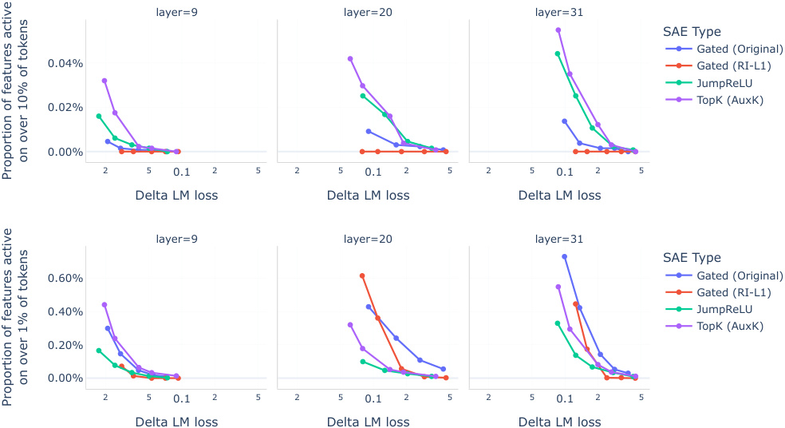
layer=9 layer=20 layer=31
SAE Type
Gated (Original)
0.04% Gated (RI-L1)
JumpReLU
TopK (AuxK)
0.02%
0.00%
2 5 0.1 2 5 2 5 0.1 2 5 2 5 0.1 2 5
Delta LM loss Delta LM loss Delta LM loss
layer=9 layer=20 layer=31
SAE Type
0.60% Gated (Original)
Gated (RI-L1)
0.40% JumpReLU
TopK (AuxK)
0.20%
0.00%
2 5 0.1 2 5 2 5 0.1 2 5 2 5 0.1 2 5
Delta LM loss Delta LM loss Delta LM loss
on over 10% of tokens
Proportion of features active
on over 1% of tokens
Proportion of features active
Figure 5 | The proportion of features that activate very frequently versus delta LM loss by SAE type for Gemma 2 9B residual stream SAEs. TopK and JumpReLU SAEs tend to have relatively more very high frequency features – those active on over 10% of tokens (top) – than Gated SAEs. If we instead count features that are active on over 1% of tokens (bottom), the picture is more mixed: Gated SAEs can have more of these high (but not necessarily very high) features than JumpReLU SAEs, particularly in the low loss (and therefore lower sparsity) regime.
Exactly how to assess the quality of the features learned by an SAE is an open research question. Existing work has focused on the activation patterns of features with particular emphasis paid to sequences a feature activates most strongly on (Bills et al., 2023; Bricken et al., 2023; Cunningham et al., 2023; Rajamanoharan et al., 2024; Templeton et al., 2024). The rating of a feature’s interpretability is usually either done by human raters or by querying a language model. In the following two sections we evaluate the interpretability of JumpReLU, Gated and TopK SAE features using both a blinded human rating study, similar to Bricken et al. (2023); Rajamanoharan et al. (2024), and automated ratings using a language model, similar to Bills et al. (2023); Bricken et al. (2023); Cunningham et al. (2023); Lieberum (2024).
Methodology Our experimental setup closely follows Rajamanoharan et al. (2024). For each sublayer (Attention Output, MLP Output, Residual Stream), each layer (9, 20, 31) and each architecture (Gated, TopK, JumpReLU) we picked three SAEs to study, for a total of 81 SAEs. SAEs were selected based on their average number of active features. We selected those SAEs which had an average number of active features closest to 20, 75 and 150.
Each of our 5 human raters was presented with summary information and activating examples from the full activation spectrum of a feature. A rater rated a feature from every SAE, presented in a random order. The rater then decided whether a feature is mostly monosemantic based on the information provided, with possible answer options being ‘Yes’, ‘Maybe’, and ‘No’, and supplied a short explanation of the feature where applicable. In total we collected 405 samples, i.e. 5 per SAE.
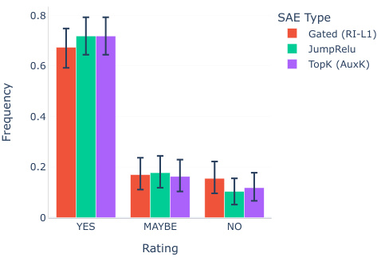
0.8 SAE Type
Gated (RI-L1)
JumpRelu
0.6 TopK (AuxK)
0.4
0.2
0
YES MAYBE NO
Rating
Frequency
Figure 6 | Human rater scores of feature interpretability. Features from all SAE architectures are rated as similarly interpretable by human raters.
Results In Fig. 6, we present the results of the manual interpretability study. Assuming a binomial 1-vs-all distribution for each ordinal rating value, we report the 2.5th to 97.5th percentile of this distribution as confidence intervals. All three SAE varieties exhibit similar rating distributions, consistent with prior results comparing TopK and Gated SAEs (Cunningham and Conerly, 2024; Gao et al., 2024) and furthermore showing that JumpReLU SAEs are similarly interpretable.
In contrast to the manual rating of features, automated rating schemes have been proposed to speed up the evaluation process. The most prominent approach is a two step process of generating an explanation for a given feature with a language model and then predicting the feature’s activations based on that explanation, again utilizing a language model. This was initially proposed by Bills et al. (2023) for neurons, and later employed by Bricken et al. (2023); Cunningham et al. (2023); Lieberum (2024) for learned SAE features.
Methodology We used Gemini Flash (Gemini Team, 2024) for explanation generation and activation simulation. In the first step, we presented Gemini Flash with a list of sequences that activate a given feature to different degrees, together with
the activation values. The activation values were binned and normalized to be integers between 0 and 10. Gemini Flash then generated a natural language explanation of the feature consistent with the activation values.
In the second step we asked Gemini Flash to predict the activation value for each token of the sequences that were used to generate the explanations9 . We then computed the correlation between the simulated and ground truth activation values. We found that using a diverse few-shot prompt for both explanation generation and activation simulation was important for consistent results.
We computed the correlation score for 1000 features of each SAE, i.e. three architectures, three layers, three layers/sub-layers and five or six sparsity levels, or 154 SAEs in total.
Results We show the distribution of Pearson correlations between language model simulated and ground truth activations in Fig. 7. There is a small but notable improvement in mean correlation from Gated to JumpReLU and from JumpReLU. Note however, that the means clearly do not capture the extent of the within-group variation. We also report a baseline of explaining the activations of a randomly initialized JumpReLU SAE for the layer 20 residual stream – effectively producing random, clipped projections of the residual stream. This exhibits markedly worse correlation scores, though notably with a clearly non-zero mean. We show the results broken down by site and layer in Fig. 15. Note that in all of these results we are grouping together SAEs with very different sparsity levels and corresponding performances.
Recent interest in training SAEs on LM activations (Bricken et al., 2023; Cunningham et al., 2023; Sharkey et al., 2022) stems from the twin observations that many concepts appear to be linearly represented in LM activations (Elhage et al.,
9Note that the true activation values were not known to the model at simulation time.
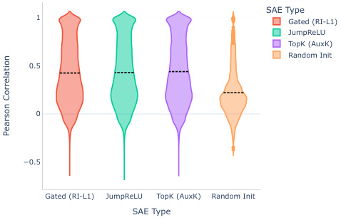
SAE Type
1 Gated (RI-L1)
JumpReLU
TopK (AuxK)
Random Init
0.5
0
−0.5
Gated (RI-L1) JumpReLU TopK (AuxK) Random Init
SAE Type
Pearson Correlation
Figure 7 | Pearson correlation between LMsimulated and ground truth activations. The dashed lines denote the mean per SAE type. Values above 1 are an artifact of the kernel density estimation used to produce the plot.
2021; Gurnee et al., 2023; Olah et al., 2020; Park et al., 2023) and that dictionary learning (Mallat and Zhang, 1993; Olshausen and Field, 1997) may help uncover these representations at scale. It is also hoped that the sparse representations learned by SAEs may be a better basis for identifying computational subgraphs that carry out specific tasks in LMs (Conmy et al., 2023; Dunefsky et al., 2024; Wang et al., 2023) and for finergrained control over LMs’ outputs (Conmy and Nanda, 2024; Templeton et al., 2024).
Recent improvements to SAE architectures – including TopK SAEs (Gao et al., 2024) and Gated SAEs (Rajamanoharan et al., 2024) – as well as improvements to initialization and sparsity penalties. Conerly et al. (2024) have helped ameliorate the trade-off between sparsity and fidelity and overcome the challenge of SAE features dying during training. Like JumpReLU SAEs, both Gated and TopK SAEs possess a thresholding mechanism that determines which features to include in a reconstruction; indeed, with weight sharing, Gated SAEs are mathematically equivalent to JumpReLU SAEs, although they are trained using a different loss function. JumpReLU SAEs are also closely related to ProLU SAEs (Taggart, 2024), which use a (different) STE to train an activation threshold, but do not match the performance of Gated or TopK SAEs (Gao et al., 2024).
The activation function defined in Eq. (4) was
named JumpReLU in Erichson et al. (2019), although it appears in earlier work, such as the TRec function in Konda et al. (2015). Both TopK and JumpReLU activation functions are closely related to activation pruning techniques such as ASH (Djurisic et al., 2023).
The term straight through estimator was introduced in Bengio et al. (2013), although it is an old idea.10 STEs have found applications in areas such as training quantized networks (e.g. Hubara et al. (2016)) and circumventing defenses to adversarial examples (Athalye et al., 2018). Our interpretation of STEs in terms of gradients of the expected loss is related to Yin et al. (2019), although they do not make the connection between STEs and KDE. Louizos et al. (2018) also show how it is possible to train models using a L0 sparsity penalty – on weights rather than activations in their case – by introducing stochasticity in the weights and taking the gradient of the expected loss.
Our evaluations show that JumpReLU SAEs produce reconstructions that consistently match or exceed the faithfulness of TopK SAEs, and exceed the faithfulness of Gated SAEs, at a given level of sparsity. They also show that the average JumpReLU SAE feature is similarly interpretable to the average Gated or TopK SAE feature, according to manual raters and automated evaluations. Although JumpReLU SAEs do have relatively more very high frequency features than Gated SAEs, they are similar to TopK SAEs in this respect.
In light of these observations, and taking into account the efficiency of training with the JumpReLU loss – which requires no auxiliary terms and does not involve relatively expensive TopK operations – we consider JumpReLU SAEs to be a mild improvement over prevailing SAE training methodologies.
Nevertheless, we note two key limitations with
10Even the Perceptron learning algorithm (Rosenblatt, 1958) can be understood as using a STE to train through a step function discontinuity.
The evaluations presented in this paper concern training SAEs on several sites and layers of a single model, Gemma 2 9B. This does raise uncertainty over how well these results would transfer to other models – particularly those with slightly different architectural or training details. In mitigation, although we have not presented the results in this paper, our preliminary experiments with JumpReLU on the Pythia suite of models (Biderman et al., 2023) produced very similar results, both when comparing the sparsityfidelity trade off between architectures and comparing interpretability. Nevertheless we would welcome attempts to replicate our results on other model families.
The science of principled evaluations of SAE performance is still in its infancy. Although we measured feature interpretability – both assessed by human raters and by the ability of Gemini Flash to predict new activations given activating examples – it is unclear how well these measures correlate to the attributes of SAEs that actually make them useful for downstream purposes. It would be valuable to evaluate these SAE varieties on a broader selection of metrics that more directly correspond to the value SAEs add by aiding or enabling downstream tasks, such as circuit analysis or model control.
Finally, JumpReLU SAEs do suffer from a few limitations that we hope can be improved with further work:
11Although, it could be the case that by doing this we end up pushing the fidelity-vs-sparsity curve for JumpReLU SAEs back closer to those of Gated SAEs. I.e. it is plausible that Gated SAEs are close to the Pareto frontier attainable by SAEs that do not possess high frequency features.
JumpReLU SAEs introduce new hyperparameters – namely the initial value of 𝜽 and the bandwidth parameter 𝜀 – that require selecting. In practice, we find that, with dataset normalization in place, the default hyperparameters used in our experiments (Appendix I) transfer quite reliably to other models, sites and layers. Nevertheless, there may be more principled ways to choose these hyperparameters, for example by adopting approaches to automatically selecting bandwidths from the literature on kernel density estimation.
The STE approach introduced in this paper is quite general. For example, we have also used STEs to train JumpReLU SAEs that have a sparsity level closed to some desired target 𝐿target 0 by using the sparsity loss
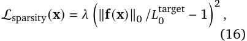
much as it is possible to fix the sparsity of a TopK SAE by setting 𝐾 (see Appendix F). STEs thus open up the possibility of training SAEs with other discontinuous loss functions that may further improve SAE quality or usability.
We thank Lewis Smith for reviewing the paper, including checking its mathematical derivations, and for valuable contributions to the SAE training codebase. We also thank Tom Conerly and Tom McGrath for pointing out errors in an earlier version of Appendix J. Finally, we are grateful to Rohin Shah and Anca Dragan for their sponsorship and support during this project.
Senthooran Rajamanoharan (SR) conceived the idea of training JumpReLU SAEs using the gradient of the expected loss, and developed the approach of using STEs to estimate this gradient. SR also performed the hyperparameter studies and trained the SAEs used in all the experiments. SAEs were trained using a codebase that was designed and implemented by Vikrant Varma and
Tom Lieberum (TL) with significant contributions from Arthur Conmy, which in turn relies on an interpretability codebase written in large part by János Kramár. TL was instrumental in scaling up the SAE training codebase so that we were able to iterate effectively on a 9B sized model for this project. TL also ran the SAE evaluations and manual interpretability study presented in the Evaluations section. Nicolas Sonnerat (NS) and TL designed and implemented the automated feature interpretation pipeline used to perform the automated interpretability study, with NS also leading the work to scale up the pipeline. SR led the writing of the paper, with the interpretability study sections and Appendix G contributed by TL. Neel Nanda provided leadership and advice throughout the project and edited the paper.
A. Athalye, N. Carlini, and D. Wagner. Obfuscated gradients give a false sense of security: Circumventing defenses to adversarial examples, 2018. URL https://arxiv.org/abs/ 1802.00420 .
Y. Bengio, N. Léonard, and A. Courville. Estimating or propagating gradients through stochastic neurons for conditional computation, 2013. URL https://arxiv.org/abs/1308. 3432 .
S. Biderman, H. Schoelkopf, Q. G. Anthony, H. Bradley, K. O’Brien, E. Hallahan, M. A. Khan, S. Purohit, U. S. Prashanth, E. Raff, et al. Pythia: A suite for analyzing large language models across training and scaling. In International Conference on Machine Learning , pages 2397– 2430. PMLR, 2023.
S. Bills, N. Cammarata, D. Mossing, H. Tillman, L. Gao, G. Goh, I. Sutskever, J. Leike, J. Wu, and W. Saunders. Language models can explain neurons in language models. https://openaipublic.blob. core.windows.net/neuron-explainer/ paper/index.html , 2023.
J. Bradbury, R. Frostig, P. Hawkins, M. J. Johnson, C. Leary, D. Maclaurin, G. Necula,
A. Paszke, J. VanderPlas, S. Wanderman-Milne, and Q. Zhang. JAX: composable transformations of Python+NumPy programs, 2018. URL http://github.com/google/jax .
T. Bricken, A. Templeton, J. Batson, B. Chen, A. Jermyn, T. Conerly, N. Turner, C. Anil, C. Denison, A. Askell, R. Lasenby, Y. Wu, S. Kravec, N. Schiefer, T. Maxwell, N. Joseph, Z. Hatfield-Dodds, A. Tamkin, K. Nguyen, B. McLean, J. E. Burke, T. Hume, S. Carter, T. Henighan, and C. Olah. Towards monosemanticity: Decomposing language models with dictionary learning. Transformer Circuits Thread , 2023. https://transformercircuits.pub/2023/monosemanticfeatures/index.html.
F. Chern, B. Hechtman, A. Davis, R. Guo, D. Majnemer, and S. Kumar. Tpu-knn: K nearest neighbor search at peak flop/s, 2022. URL https://arxiv.org/abs/2206.14286 .
T. Conerly, A. Templeton, T. Bricken, J. Marcus, and T. Henighan. Update on how we train SAEs. Transformer Circuits Thread , 2024. URL https://transformer-circuits. pub/2024/april-update/index.html# training-saes .
A. Conmy and N. Nanda. Activation steering with SAEs. Alignment Forum , 2024. Progress Update #1 from the GDM Mech Interp Team.
A. Conmy, A. N. Mavor-Parker, A. Lynch, S. Heimersheim, and A. Garriga-Alonso. Towards automated circuit discovery for mechanistic interpretability, 2023.
H. Cunningham and T. Conerly. Circuits Updates - June 2024: Comparing TopK and Gated SAEs to Standard SAEs. Transformer Circuits Thread , 2024. URL https://transformer-circuits. pub/2024/june-update/index.html# topk-gated-comparison .
H. Cunningham, A. Ewart, L. Riggs, R. Huben, and L. Sharkey. Sparse autoencoders find highly interpretable features in language models, 2023.
A. Djurisic, N. Bozanic, A. Ashok, and R. Liu. Extremely simple activation shaping for outof-distribution detection, 2023. URL https: //arxiv.org/abs/2209.09858 .
J. Dunefsky, P. Chlenski, and N. Nanda. Transcoders find interpretable llm feature circuits, 2024. URL https://arxiv.org/abs/ 2406.11944 .
N. Elhage, N. Nanda, C. Olsson, T. Henighan, N. Joseph, B. Mann, A. Askell, Y. Bai, A. Chen, T. Conerly, N. DasSarma, D. Drain, D. Ganguli, Z. Hatfield-Dodds, D. Hernandez, A. Jones, J. Kernion, L. Lovitt, K. Ndousse, D. Amodei, T. Brown, J. Clark, J. Kaplan, S. McCandlish, and C. Olah. A mathematical framework for transformer circuits. Transformer Circuits Thread , 2021. URL https://transformer-circuits.pub/ 2021/framework/index.html .
N. B. Erichson, Z. Yao, and M. W. Mahoney. Jumprelu: A retrofit defense strategy for adversarial attacks, 2019.
L. Gao, T. D. la Tour, H. Tillman, G. Goh, R. Troll, A. Radford, I. Sutskever, J. Leike, and J. Wu. Scaling and evaluating sparse autoencoders, 2024. URL https://arxiv.org/abs/2406. 04093 .
Gemini Team. Gemini 1.5: Unlocking multimodal understanding across millions of tokens of context, 2024. URL https://arxiv.org/abs/ 2403.05530 .
Gemma Team. Gemma 2: Improving open language models at a practical size, 2024. URL https://storage. googleapis.com/deepmind-media/ gemma/gemma-2-report.pdf .
W. Gurnee, N. Nanda, M. Pauly, K. Harvey, D. Troitskii, and D. Bertsimas. Finding neurons in a haystack: Case studies with sparse probing, 2023.
I. Hubara, M. Courbariaux, D. Soudry, R. El-Yaniv, and Y. Bengio. Quantized neural networks: Training neural networks with low precision weights and activations, 2016. URL https: //arxiv.org/abs/1609.07061 .
D. P. Kingma and J. Ba. Adam: A method for stochastic optimization, 2017. URL https: //arxiv.org/abs/1412.6980 .
K. Konda, R. Memisevic, and D. Krueger. Zerobias autoencoders and the benefits of coadapting features, 2015. URL https:// arxiv.org/abs/1402.3337 .
T. Lieberum. Interpreting sae features with gemini ultra. Alignment Forum , 2024. Progress Update #1 from the GDM Mech Interp Team.
C. Louizos, M. Welling, and D. P. Kingma. Learning sparse neural networks through 𝑙 0 regularization. In 6th International Conference on Learning Representations, ICLR 2018, Vancouver, BC, Canada, April 30 - May 3, 2018, Conference Track Proceedings . OpenReview.net, 2018. URL https://openreview. net/forum?id=H1Y8hhg0b .
S. Mallat and Z. Zhang. Matching pursuits with time-frequency dictionaries. IEEE Transactions on Signal Processing , 41(12):3397–3415, 1993. doi: 10.1109/78.258082.
S. Marks, C. Rager, E. J. Michaud, Y. Belinkov, D. Bau, and A. Mueller. Sparse feature circuits: Discovering and editing interpretable causal graphs in language models, 2024.
A. Ng. Sparse autoencoder. http: //web.stanford.edu/class/cs294a/ sparseAutoencoder.pdf , 2011. CS294A Lecture notes.
C. Olah, N. Cammarata, L. Schubert, G. Goh, M. Petrov, and S. Carter. Zoom in: An introduction to circuits. Distill , 2020. doi: 10.23915/distill.00024.001.
C. Olah, A. Templeton, T. Bricken, and A. Jermyn. Open Problem: Attribution Dictionary Learning. Transformer Circuits Thread , 2024. URL https: //transformer-circuits.pub/2024/ april-update/index.html#attr-dl .
B. A. Olshausen and D. J. Field. Sparse coding with an overcomplete basis set: A strategy employed by v1? Vision Research , 37(23):3311– 3325, 1997. doi: 10.1016/S0042-6989(97) 00169-7.
K. Park, Y. J. Choe, and V. Veitch. The linear representation hypothesis and the geometry of large language models, 2023.
E. Parzen. On Estimation of a Probability Density Function and Mode. The Annals of Mathematical Statistics , 33(3):1065 – 1076, 1962. doi: 10.1214/aoms/1177704472. URL https: //doi.org/10.1214/aoms/1177704472 .
A. Paszke, S. Gross, F. Massa, A. Lerer, J. Bradbury, G. Chanan, T. Killeen, Z. Lin, N. Gimelshein, L. Antiga, A. Desmaison, A. Köpf, E. Yang, Z. DeVito, M. Raison, A. Tejani, S. Chilamkurthy, B. Steiner, L. Fang, J. Bai, and S. Chintala. Pytorch: An imperative style, high-performance deep learning library, 2019. URL https:// arxiv.org/abs/1912.01703 .
S. Rajamanoharan, A. Conmy, L. Smith, T. Lieberum, V. Varma, J. Kramár, R. Shah, and N. Nanda. Improving dictionary learning with gated sparse autoencoders, 2024.
F. Rosenblatt. The perceptron: A probabilistic model for information storage and organization in the brain. Psychological Review , 65 (6):386–408, 1958. ISSN 0033-295X. doi: 10.1037/h0042519. URL http://dx.doi. org/10.1037/h0042519 .
L. Sharkey, D. Braun, and B. Millidge. [interim research report] taking features out of superposition with sparse autoencoders, 2022.
G. M. Taggart. Prolu: A nonlinearity for sparse autoencoders. Alignment Forum, 2024.
A. Templeton, T. Conerly, J. Marcus, J. Lindsey, T. Bricken, B. Chen, A. Pearce, C. Citro, E. Ameisen, A. Jones, H. Cunningham, N. L. Turner, C. McDougall, M. MacDiarmid, C. D. Freeman, T. R. Sumers, E. Rees, J. Batson, A. Jermyn, S. Carter, C. Olah, and T. Henighan. Scaling monosemanticity: Extracting interpretable features from claude 3 sonnet. Transformer Circuits Thread , 2024. URL https://transformer-circuits.pub/ 2024/scaling-monosemanticity/index. html .
K. R. Wang, A. Variengien, A. Conmy, B. Shlegeris, and J. Steinhardt. Interpretability in the
wild: a circuit for indirect object identification in GPT-2 small. In The Eleventh International Conference on Learning Representations , 2023. URL https://openreview. net/forum?id=NpsVSN6o4ul .
L. Wasserman. All of statistics : a concise course in statistical inference . Springer, New York, 2010. ISBN 9781441923226 1441923225.
B. Wright and L. Sharkey. Addressing feature suppression in saes. AI Alignment Forum, Feb 2024.
P. Yin, J. Lyu, S. Zhang, S. Osher, Y. Qi, and J. Xin. Understanding straight-through estimator in training activation quantized neural nets, 2019. URL https://arxiv.org/abs/ 1903.05662 .
We start by reviewing some results about differentiating integrals (and expectations) involving Heaviside step functions.
Lemma 1. Let X be a 𝑛-dimensional real random variable with probability density 𝑝 X and let 𝑌 = 𝑔 ( X ) for a differentiable function 𝑔 : ℝ𝑛 → ℝ . Then we can express the probability density function of 𝑌 as the surface integral
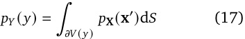
where 𝜕𝑉 ( 𝑦 ) is the surface 𝑔 ( x ) = 𝑦 and d 𝑆 is its surface element.
Proof. From the definition of a probability density function:
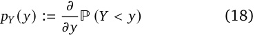
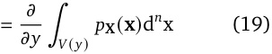
where 𝑉 ( 𝑦 ) is the volume 𝑔 ( x ) < 𝑦 . Eq. (17) follows from an application of the multidimensional Leibniz integral rule. □
Theorem 1. Let X and 𝑦 once again be defined as in Lemma 1. Also define
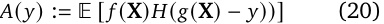
where 𝐻 is the Heaviside step function for some function 𝑓 : ℝ𝑛 → ℝ . Then, as long as 𝑓 is differentiable on the surface 𝑔 ( x ) = 𝑦, the derivative of 𝐴 at 𝑦 is given by
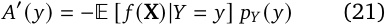
Proof. We can express 𝐴 ( 𝑦 ) as the volume integral
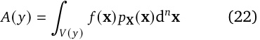
where 𝑉 ( 𝑦 ) is now the volume 𝑔 ( x ) > 𝑦 . Applying the multidimensional Leibniz integral rule (noting that 𝑓 is differentiable on the boundary of 𝑉 ( 𝑦 ), we therefore obtain
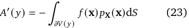
where 𝜕𝑉 is the surface 𝑔 ( x ) = 𝑦 . Eq. (21) follows by noting that 𝑝 X ( x ) = 𝑝 X | 𝑌 = 𝑦 ( x ) 𝑝𝑌 ( 𝑦 ) and thus substituting Eq. (17) into Eq. (23). □
Lemma 2. With the same definitions as in Theorem 1, the expected value
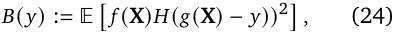
which involves the square of the Heaviside step function, is equal to 𝐴 ( 𝑦 ) .
Proof. Expressed in integral form, both 𝐴 ( 𝑦 ) and 𝐵 ( 𝑦 ) have the same domains of integration (the volume 𝑔 ( x ) > 𝑦 ) and integrands; therefore their values are identical. □
By substituting in the following expressions for various terms in the loss:
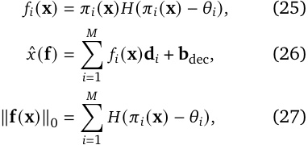
taking the expected value, and differentiating (making use of the results of the previous section), we obtain
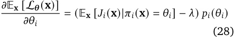
where 𝑝𝑖 is the probability density function for the pre-activation 𝜋𝑖 ( x ) and
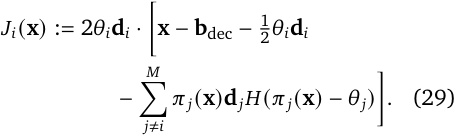
We can express this derivative in the more succinct form given in Eq. (13) and Eq. (14) by defining
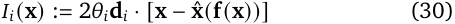
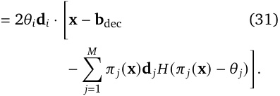
and adopting the convention 𝐻 (0) := 12;this means that 𝐼𝑖 ( x ) = 𝐽𝑖 ( x ) whenever 𝜋𝑖 ( x ) = 𝜃𝑖 , allowing us to replace 𝐽𝑖 by 𝐼𝑖 within the conditional expectation in Eq. (28).
Using the chain rule, we can differentiate the JumpReLU loss function to obtain the expression
The JumpReLU loss is given by
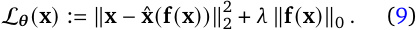
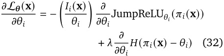
where 𝐼𝑖 ( x ) is defined as in Eq. (14). If we replace the partial derivatives in Eq. (32) with the pseudoderivatives defined in Eq. (11) and Eq. (12), we obtain the following expression for the pseudogradient of the loss:
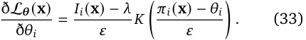
Computing this pseudo-gradient over a batch of observations x 1, x 2, . . . , x 𝑁 and taking the mean, we obtain the kernel density estimator
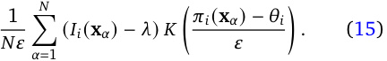
Gated SAEs compute two encoder pre-activations:
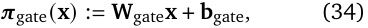
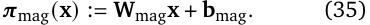
The first of these is used to determine which features are active, via a Heaviside step activation function, whereas the second is used to determine active features’ magnitudes, via a ReLU step function:
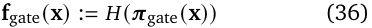
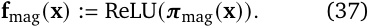
The encoder’s overall output is given by the elementwise product f ( x ) := f gate( x ) ⊙ f mag( x ). The decoder of a Gated SAE takes the standard form
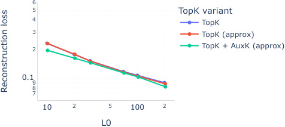
6
5 TopK variant
4 TopK
3 TopK (approx)
2 TopK + AuxK (approx)
0.1
9
8
7
10 2 5 100 2
L0
Reconstruction loss
Figure 8 | Using an approximation of TopK leads to similar performance as exact TopK. Adding the AuxK term to the loss function slightly improves fidelity at a given level of sparsity.
where ˆ x frozen is a frozen copy of the decoder, so that W dec and b dec do not receive gradient updates from the auxiliary loss term.
For our JumpReLU evaluations in Section 5, we also trained a variant of Gated SAEs where we replace the L1 sparsity penalty in Eq. (39) with the reparameterisation-invariant L1 (RI-L1) sparsity penalty 𝑆 RI-L1 defined in Eq. (6), i.e. by making the replacement ��ReLU( 𝝅 gate( x )��1→ 𝑆 RI-L1( 𝝅 gate( x )), as well as unfreezing the decoder in the auxiliary loss term. As demonstrated in Fig. 2, Gated SAEs trained this way have a similar sparsity-vs-fidelity trade-off to SAEs trained using the original Gated loss function, without the need to use resampling to avoid the appearance of dead features during training.
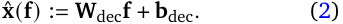
As in Rajamanoharan et al. (2024), we tie the weights of the two encoder matrices, parameterising W mag in terms of W gate and a vector-valued rescaling parameter r mag:
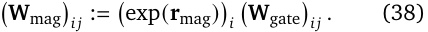
The loss function used to train Gated SAEs in Rajamanoharan et al. (2024) includes a L1 sparsity penalty and auxiliary loss term, both involving the positive elements of 𝝅 gate, as follows:
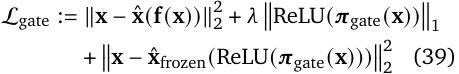
We used the approximate TopK approximation jax.lax.approx_max_k (Chern et al., 2022) to train the TopK SAEs used in the evaluations in Section 5. Furthermore, we included the AuxK auxiliary loss function to train these SAEs. Supporting these decisions, Fig. 8 shows:
That SAEs trained with an approximate TopK activation function perform similarly to those trained with an exact TopK activation function;
That the AuxK loss slightly improves reconstruction fidelity at a given level of sparsity.
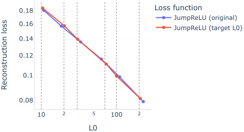
0.18 Loss function
JumpReLU (original)
0.16
JumpReLU (target L0)
0.14
0.12
0.1
0.08
10 2 5 100 2
L0
Reconstruction loss
Figure 9 | By using the sparsity penalty in Eq. (40), we can train JumpReLU SAEs to minimize reconstruction loss while maintaining a desired target level of sparsity. The vertical dashed grey lines indicate the target L0 values used to train the SAEs represented by the red dots closest to each line. These SAEs were trained setting 𝜆 = 1.
Using the same pseudo-derivatives defined in Section 3 it is possible to train JumpReLU SAEs with other loss functions. For example, it may be desirable to be able to target a specific level of sparsity during training – as is possible by setting 𝐾 when training TopK SAEs – instead of the sparsity of the trained SAE being an implicit function of the sparsity coefficient and reconstruction loss.
A simple way to achieve this is by training JumpReLU SAEs with the loss
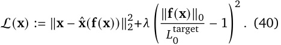
Training SAEs with this loss on Gemma 2 9B’s residual stream after layer 20, we find a similar fidelity-to-sparsity relationship to JumpReLU SAEs trained with the loss in Eq. (9), as shown in Fig. 9. Moreover, by using with the above loss, we are able to train SAEs that have L0s at convergence that are close to their targets, as shown by the proximity of the red dots in the figure to their respective vertical grey lines.
Fig. 10 and Fig. 11 plot reconstruction fidelity against sparsity for SAEs trained on Gemma 2 9B
MLP and attention outputs at layers 9, 20 and 31. Fig. 12 uses fraction of variance explained (see Section 5) as an alternative measure of reconstruction fidelity, and again compares the fidelityvs-sparsity trade-off for JumpReLU, Gated and TopK SAEs on MLP, attention and residual stream layer outputs for Gemma 2 9B layers 9, 20 and 31. Fig. 14 compares feature activation frequency histograms for JumpReLU, TopK and Gated SAEs of comparable sparsity.
Automated interpretability In fig Fig. 15 we show the distribution and means of the correlations between LM-simulated and ground truth activations, broken down by layer and site. In line with our other findings, layer 20 and the prelinear attention output seem to perform worst on this metric.
Attribution Weighted Effective Sparsity Conventionally, sparsity of SAE feature activations is measured as the L0 norm of the feature activations. Olah et al. (2024) suggest to train SAEs to have low L1 activation of attribution-weighted feature activations, taking into account that some features may be more important than others. Inspired by this, we investigate the sparsity of the attribution weighted feature activations. Following Olah et al. (2024), we define the attributionweighted feature activation vector y as
where we choose the mean-centered logit of the correct next token as the loss function L. We then normalize the magnitudes of the entries of y to obtain a probability distribution 𝑝 ≡ 𝑝 ( y ). We can measure how far this distribution diverges from a uniform distribution 𝑢 over active features via the KL divergence
with the entropy S ( 𝑝 ). Note that 0 ≤ D KL( 𝑝 ∥ 𝑢 ) ≤ log ∥ y ∥0. Exponentiating the negative KL divergence gives a new measure 𝑟𝐿 0
layer=9 layer=20 layer=31
SAE Type
0.01 Gated (Original)
Gated (RI-L1)
JumpReLU
5 TopK (AuxK)
2
0.001
10 2 5 100 2 5 1000 10 2 5 100 2 5 1000 10 2 5 100 2 5 1000
L0 L0 L0
Delta LM Loss
Figure 10 | Comparing reconstruction fidelity versus sparsity for JumpReLU, Gated and TopK SAEs trained on Gemma 2 9B layer 9, 20 and 31 MLP outputs. JumpReLU SAEs consistently provide more faithful reconstructions (lower delta LM loss) at a given level of sparsity (as measured by L0).
layer=9 layer=20 layer=31
SAE Type
5
Gated (Original)
Gated (RI-L1)
2 JumpReLU
TopK (AuxK)
0.001
5
10 2 5 100 2 5 10 2 5 100 2 5 10 2 5 100 2 5
L0 L0 L0
Delta LM Loss
Figure 11 | Comparing reconstruction fidelity versus sparsity for JumpReLU, Gated and TopK SAEs trained on Gemma 2 9B layer 9, 20 and 31 attention activations prior to the attention output linearity ( W 𝑂 ). JumpReLU SAEs consistently provide more faithful reconstructions (lower delta LM loss) at a given level of sparsity (as measured by L0).
layer=9 layer=20 layer=31
0.6 SAE Type
Gated (Original)
Gated (RI-L1)
0.4 JumpReLU
TopK (AuxK)
0.2
0
0.6
0.4
0.2
0
0.6
0.4
0.2
0
10 2 5 100 2 5 1000 10 2 5 100 2 5 1000 10 2 5 100 2 5 1000
L0 L0 L0
FVU
site=attn_output_pre_linear
FVU
site=mlp_output
FVU
site=post_mlp_residual
Figure 12 | Comparing reconstruction fidelity versus sparsity for JumpReLU, Gated and TopK SAEs trained on Gemma 2 9B layer 9, 20 and 31 MLP, attention and residual stream activations using fraction of variance unexplained (FVU) as a measure of reconstruction fidelity.
layer=9 layer=20 layer=31
3%
SAE Type
Gated (Original)
2% Gated (RI-L1)
JumpReLU
TopK (AuxK)
1%
0%
0 0.2 0.4 0 0.2 0.4 0 0.2 0.4
Delta LM loss Delta LM loss Delta LM loss
Proportion of dead features
Figure 13 | JumpReLU and TopK SAEs have few dead features (features that activate on fewer than one in 107 tokens), even without resampling. Note that the original Gated loss (blue) – the only training method that uses resampling – had around 40% dead features at layer 20 and is therefore missing from the middle plot.
Figure 14 | Feature frequency histograms for JumpReLU, TopK and Gated SAEs all with L0 approximately 70 (excluding features with zero activation counts). Note the log-scale on the y-axis: this is to highlight a small mode of high frequency features present in the JumpReLU and TopK SAEs. Gated SAEs do not have this mode, but do have a “shoulder” of features with frequencies between 10−2 and 10−1 not present in the JumpReLU and TopK SAEs.
layer=9 layer=20 layer=31
1 SAE Type
Gated (RI-L1)
0.5
JumpReLU
0 TopK (AuxK)
−0.5
1
0.5
0
−0.5
1 1 1
0.5 0.5 0.5
0
0 0
−0.5
−0.5 −0.5
SAE Type
Gated (RI-L1)JumpReLUTopK (AuxK) Gated (RI-L1)JumpReLUTopK (AuxK) Gated (RI-L1)JumpReLUTopK (AuxK)
site=attn_output_pre_linear
site=mlp_output
Pearson Correlation
site=post_mlp_residual
Figure 15 | Pearson correlation between simulated and ground truth activations, broken down by site and layer.
layer=9 layer=20 layer=31
1
SAE Type
0.8 Gated (RI-L1)
0.6 JumpRelu
TopK (AuxK)
0.4
0.2
0
1
0.8
0.6
0.4
0.2
0
1
0.8
0.6
0.4
0.2
0
10 2 5 100 2 5 1000 10 2 5 100 2 5 1000 10 2 5 100 2 5 1000
L0 L0 L0
site=attn_output_pre_linear
site=mlp_output
Uniformity of Active Feature Importance
site=post_mlp_residual
Figure 16 | Comparing uniformity of active feature importance against L0 for JumpReLU, Gated and TopK SAEs. All SAEs diffuse their effects more with increased L0. This effect appears strongest for TopK SAEs.
6
5 Kernel
4 rectangle
3 triangle
2 epanechnikov
gaussian
0.1
9
8
7
2 3 4 5 6 7 8 9100 2
L0
Reconstruction loss
Figure 17 | Using different kernel functions to compute the pseudo-derivatives defined in Eq. (11) and Eq. (12) has little impact on fidelityvs-sparsity curves. These curves are for Gemma 2 9B post-layer 20 residual stream SAEs trained on 2B tokens.
with ∥ y 1∥0≤_𝑟𝐿_0≤1.Notethatsince𝑒Scanbe interpreted as the effective number of active elements, 𝑟𝐿 0 is the ratio of the effective number of active features (after reweighting) to the total number of active features, which we call the ‘Uniformity of Active Feature Importance’. We computed 𝑟𝐿 0 over 2048 sequences of length 1024 (ignoring special tokens) for all SAE types and sparsity levels and report the result in Fig. 16. For all SAE types and locations, the more features are active the more diffuse their effect appears to be. Furthermore, this effect seems to be strongest for TopK SAEs, while Gated and JumpReLU SAEs behave mostly identical (except for layer 31, residual stream SAEs). However, we caution to not draw premature conclusions about feature quality from this observation.
As described in Section 3, we used a simple rectangle function as the kernel, 𝐾 ( 𝑧 ), within the pseudo-derivatives defined in Eq. (11) and Eq. (12). As shown in Fig. 17, similar results can be obtained with other common KDE kernel functions; there does not seem to be any obvious benefit to using a higher order kernel.
We normalise LM activations so that they have mean squared L2 norm of one during
We trained all our SAEs with a learning rate of 7 × 10−5 and batch size of 4,096.
As in Rajamanoharan et al. (2024), we warm up the learning rate over the first 1,000 steps (4M tokens) using a cosine schedule, starting the learning rate at 10% of its final value (i.e. starting at 7 × 10−6 ).
We used the Adam optimizer (Kingma and Ba, 2017) 𝛽 1 = 0, 𝛽 2 = 0 . 999 and 𝜖 = 10−8 . In our initial hyperparameter study, we found training with lower momentum ( 𝛽 1 < 0 . 9) produced slightly better fidelityvs-sparsity carves for JumpReLU SAEs, although differences were slight.
We use a pre-encoder bias during training Bricken et al. (2023) – i.e. subtract b dec from x prior to the encoder. Through ablations we found this to either have no impact or provide a small improvement to performance (depending on model, site and layer).
For JumpReLU SAEs we initialised the threshold 𝜽 to 0.001 and the bandwidth 𝜀 also to 0.001. These parameters seem to work well for a variety of LM sizes, from single layer models up to and including Gemma 2 9B.
For Gated RI-L1 SAEs we initialised the norms of the decoder columns ∥ d 𝑖 ∥2 to 0.1.
We trained all SAEs except for Gated RIL1 while constraining the decoder columns ∥ d 𝑖 ∥2 to 1.12
Following Conerly et al. (2024) we set W enc to be the transpose of W dec at initialisation (but thereafter left the two matrices untied) when training of all SAE types, and warmed up 𝜆 linearly over the first 10,000 steps (40M tokens) for all except TopK SAEs.
We used resampling (Bricken et al., 2023) – periodically re-initialising the parameters corresponding to dead features – with Gated (original loss) SAEs, but did not use resampling with Gated RI-L1, TopK or JumpReLU SAEs.
12This is not strictly necessary for JumpReLU SAEs and we subsequently found that training JumpReLU SAE without this constraint does not change fidelity-vs-sparsity curves, but we have not fully explored the consequences of turning this constraint off.
We include pseudo-code for implementing:
The Heaviside step function with custom backward pass defined in Eq. (12).
The JumpReLU activation function with custom backward pass defined in Eq. (11).
The JumpReLU SAE forward pass.
The JumpReLU loss function.
Our pseudo-code most closely resembles how these functions can be implemented in JAX, but should be portable to other frameworks, like PyTorch, with minimal changes.
Two implementation details to note are:
We use the logarithm of threshold, i.e. log( 𝜽 ), as our trainable parameter, to ensure that the threshold remains positive during training.
Even with this parameterisation, it is possible for the threshold to become smaller than half the bandwidth, i.e. that 𝜃𝑖 < 𝜀 /2 for some 𝑖 . To ensure that negative pre-activations can never influence the gradient computation, we take the ReLU of the pre-activations before passing these to the JumpReLU activation function or the Heaviside step function used to compute the L0 sparsity term. Mathematically, this has no impact on the forward pass (because pre-activations below the positive threshold are set to zero in both cases anyway), but it ensures that negative preactivations cannot bias gradient estimates in the backward pass.
defrectangle(x):
return((x>-0.5)&(x<0.5)).astype(x.dtype)
###Implementationofstepfunctionwithcustombackward
@custom_vjp
defstep(x,threshold):
return(x>threshold).astype(x.dtype)
defstep_fwd(x,threshold):
out=step(x,threshold)
cache=x,threshold#Savedforuseinthebackwardpass
returnout,cache
defstep_bwd(cache,output_grad):
x,threshold=cache
x_grad=0.0*output_grad#Wedon’tapplySTEtoxinput
threshold_grad=(
-(1.0/bandwidth)*rectangle((x-threshold)/bandwidth)*output_grad
)
returnx_grad,threshold_grad
step.defvjp(step_fwd,step_bwd)
###ImplementationofJumpReLUwithcustombackwardforthreshold
@custom_vjp
defjumprelu(x,threshold):
returnx*(x>threshold)
defjumprelu_fwd(x,threshold):
out=jumprelu(x,threshold)
cache=x,threshold#Savedforuseinthebackwardpass
returnout,cache
defjumprelu_bwd(cache,output_grad):
x,threshold=cache
x_grad=(x>threshold)*output_grad#Wedon’tapplySTEtoxinput
threshold_grad=(
-(threshold/bandwidth)
*rectangle((x-threshold)/bandwidth)
*output_grad
)
returnx_grad,threshold_grad
jumprelu.defvjp(jumprelu_fwd,jumprelu_bwd)
###ImplementationofJumpReLUSAEforwardpassandlossfunctions
defsae(params,x,use_pre_enc_bias):
#Optionally,applypre-encoderbias
ifuse_pre_enc_bias:
x=x-params.b_dec
#Encoder-seeaccompanyingtextforwhywetaketheReLU
#ofpre_activationseventhoughitisn’tmathematically
#necessary
pre_activations=relu(x@params.W_enc+params.b_enc)
threshold=exp(params.log_threshold)
feature_magnitudes=jumprelu(pre_activations,threshold)
#Decoder
x_reconstructed=feature_magnitudes@params.W_dec+params.b_dec
#Alsoreturnpre_activations,neededtocomputesparsityloss
returnx_reconstructed,feature_magnitudes
###ImplementationofJumpReLUloss
defloss(params,x,sparsity_coefficient,use_pre_enc_bias):
x_reconstructed,feature_magnitudes=sae(params,x,use_pre_enc_bias)
#Computeper-examplereconstructionloss
reconstruction_error=x-x_reconstructed
reconstruction_loss=sum(reconstruction_error**2,axis=-1)
#Computeper-examplesparsityloss
threshold=exp(params.log_threshold)
l0=sum(step(feature_magnitudes,threshold),axis=-1)
sparsity_loss=sparsity_coefficient*l0
#Returnthebatch-wisemeantotalloss
returnmean(reconstruction_loss+sparsity_loss,axis=0)
← 19 Scaling and Evaluating Sparse Autoencoders · Contents · 21 A is for Absorption →